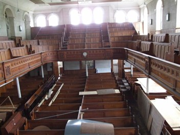
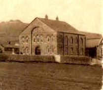

Capel M.C.
Llithfaen

Cafodd Capel Methodistiaid Calfinaidd, Llithfaen ei gofrestru fel adeilad Gradd II*. Y capel presennol, sy'n cael ei alw yn lleol yn Capel Isaf, yw'r pumed capel i gael ei adeiladu yn y pentref ar gyfer y gymuned Fethodistaidd. Codwyd ef yn 1905 gan Griffith Jones, Morfa Nefyn yn ôl cynllun Owen Morris Roberts, Porthmadog. Mae tu mewn y prif gapel wedi ei gynllunio i eistedd tua 700. Mae'r to plaster mewn adrannau wedi ei fowldio a chylgigau mawr. Mae'r Y galeri yn y capel sy’n arbennig gan ei fod ar bedair ochr yr adeilad. waliau wedi eu plastro a'u peintio fel cerrig. Pȋn yw'r gwaith coed. Mae galeri o 5 rhes o seddi yn cael ei ddal ar golofnau haearn rhychiog. Mae i'r galeri du blaen addurnedig a cherfiedig ac mae'n nodedig oherwydd y corneli crwm ar y pedair ochr yn cynnwys lle pwrpasol ar gyfer y côr meibion lleol ar y pryd ar yr ochr ddwyreiniol a galeri is tu ôl i'r pulpud ar gyfer yr organ. Yn 1999 roedd yn cael ei ddisgrifio fel capel mawr wedi ei gadw yn dda a'u du mewn trawiadol wedi ei gynllunio yn ofalus, wedi ei adeiladu fel ffocws crefyddol a chymdeithasol ar gyfer y gymuned leol ar amser pan oedd y diwydiant chwareli yn ei anterth yn yr ardal.
Costiodd y capel £3081, 8 swllt a 2 geiniog i'w adeiladu. Cynhaliwyd y gwasanaeth cyhoeddus cyntaf gan Evan Roberts, Diwygiwr ar 12 Rhagfyr 1905. Darllenwyd a gweddïwyd gan y Parch. E. Sidney Morris. Nid oedd y capel yn gwbl barod ar y pryd, gan fod y peintwyr heb orffen eu gwaith. Pregethwyd yn y capel newydd ar 1 Ebrill 1906 a gweinyddwyd y briodas gyntaf ar 15 Awst.
Daeth Pwyllgor Adfywio Ardal Llithfaen at ei gilydd yn 2012 gyda'r bwriad o sbarduno Llun o’r capel yn gynnar ar ddechrau’r ganrif diwethaf. datblygiad cymunedol yn Llithfaen a'r cylch. Ffurfiwyd y Pwyllgor gyda nifer o unigolion gweithgar yn y pentref. Gyda chefnogaeth y Cyngor Cymuned, aelodau'r capel a'r Henaduriaeth a grwpiau lleol. Yn 2013, derbyniwyd cefnogaeth ariannol gan Ardal Harddwch Naturiol Llŷn a Mantell Gwynedd a chomisiynwyd gwaith i adnabod blaenoriaethau'r gymuned ac ymchwilio i'r cyfleon gan edrych ar nifer o safleoedd yn y pentref. Un o'r adeiladau hynny oedd Capel Isaf, a bu'r gwaith yn datblygu argymhellion a dichonoldeb datblygu'r adeilad. Roedd y gwaith yma wedi esgor ar gwmni Hafod Ceiri.
Mae Hafod Ceiri yn gwmni wedi ei sefydlu i ddatblygu Capel Isaf, Llithfaen yn Ganolfan aml bwrpas ar gyfer Llithfaen a'r ardal ehangach ac wedi arwyddo les ar gyfer yr adeilad am y 99 mlynedd nesaf. Nod Hafod Ceiri fel cwmni yw cyflwyno treftadaeth unigryw yr ardal leol a chynorthwyo ystod eang o bobl i ddysgu am eu treftadaeth drwy weithgareddau a digwyddiadau addysgol a chyfranogol; datblygu hyder cymunedol ac annog mentergarwch a hybu cyflogaeth y cylch a thrwy hyn sicrhau lle o addoliad i'r dyfodol i bentref Llithfaen a gwarchod adeilad unigryw yn yr ardal.
Map yn dangos lleoliad y capel yn y pentref.